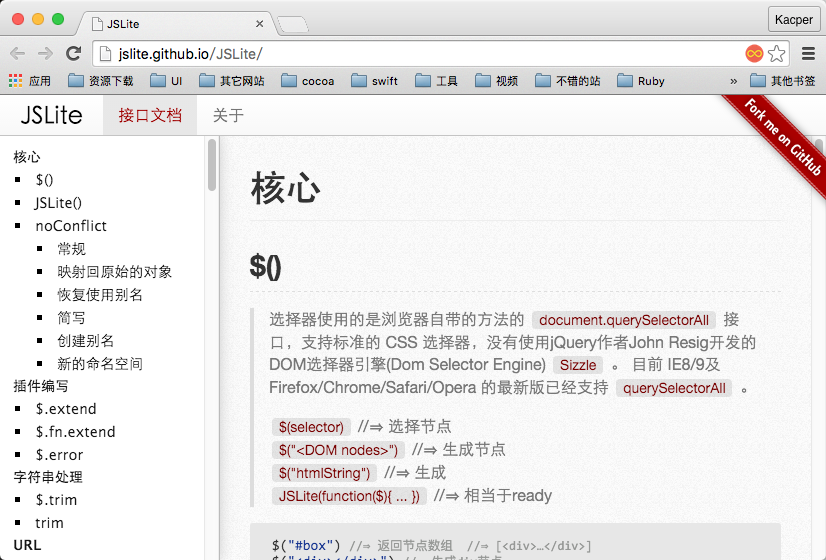
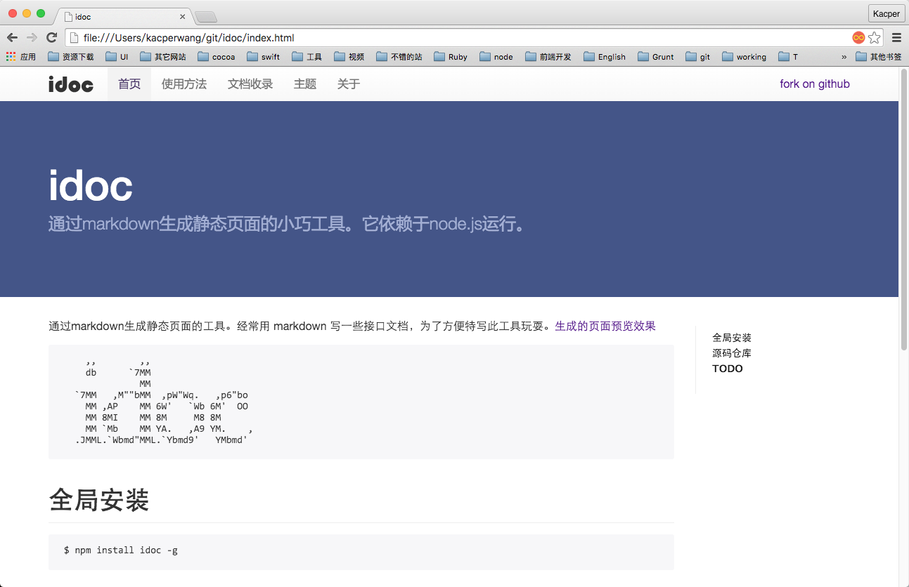

| handbook 预览 | default 预览 |
|---|---|
|  |  |
等待您提交。😄
可以提交 idoc 的主题 进入提交。
使用下面命令调出主题选择。💯
$ idoc theme
idoc theme命令会出现主题选项，选择你的主题。$ git clone --recursive https://github.com/idoc-theme/idoc-theme-slate.git
$ idoc theme
制作主题需要指定制作的主题所在的目录
$ idoc -t ~/git/idoc-theme-slate/
注意 :
md保存一下，将自动生成。idoc init初始化。idoc-theme-为前缀哦。mkdir idoc-temp && cd idoc-temp => idoc-temp文件夹进入该文件夹；echo "# 这是一个idoc文档" >> 首页.md => idoc-temp文件夹中新建一个首页.md；git clone --recursive https://github.com/idoc-theme/idoc-theme-slate.git => idoc-temp 这个目录下克隆模版 idoc-theme-slate；idoc-theme-slate更改成你的主题名字；idoc -t => idoc-theme-slate；idoc -w首页.md进行保持，会你的主题会自动生效；预览界面idoc-temp目录打开index.html预览；下面为模板目录
# idoc/theme/default/
./default
├── footer.ejs
├── gitignore
├── head.ejs
├── header.ejs
├── layout.ejs
└── source
├── css
│ ├── highlight.styl
│ ├── main.styl
│ ├── markdown.styl
│ ├── reset.styl
│ └── vendor.styl
├── img
└── js
样式使用 stylus 来写默认 main.styl 会自动生成 main.css ，供页面引用。你也可以写纯css 在页面中引用。
默认会将此目录的中除 .styl 以外的文件复制到根目录中。
里面放一些 img 、js
布局文件默认放到主题目录的根目录，例如：主题default的布局文件默认是更目录的所有ejs，默认 layout.ejs 为入口模板
| 属性 | 描述 |
|---|---|
| title | 项目工程名字package.json 中的 name |
| index | 布尔值 false/true |
| pkg | package.json 内容 |
| relative_path | 相对路径 |
| menu_html | 导航菜单 |
| toc_html | markdown 导航 |
| markdown_html | markdown 生成HTML字符串 |
在 pk.json 中配置的内容，在模版文件中可以访问，在项目根目录的 package.json 文件是在初始化idoc init 的时候跟 pk.json 合并的。
主题中使用的工具说明，制作主题的时候，你只需安装 node.js 即可
选择 ejs 作为模板引擎，模板引擎选择ejs，我只想要一个简单的帮我填充数据的模板。github 文档 ejs.co
使用Stylus写CSS，Stylus功能上更为强壮，和js联系更加紧密。官方文档 张鑫旭老师的中文翻译 Try Stylus!